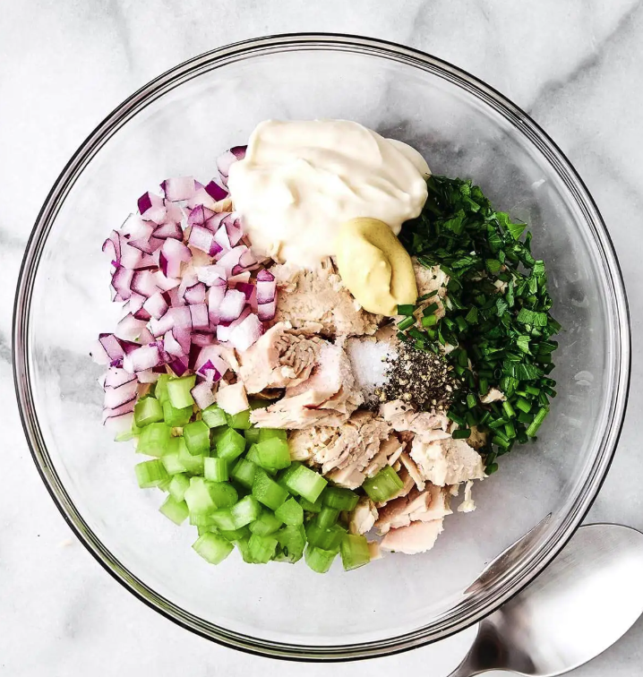

Tuna Salad
Home

Description
Home made tuna salad. Mash all the ingredients by hand or with a mortar to make it chunky and nice.
Ingredients
- Blikje tonijn met olijfolie
- 1 rode ui
- 2 el mayanaise
- 1 el mosterd
- Handje zwarte olijven
- 1 el kappertjes
- 1 el citroensap
- Peper
- Zout
Steps
- Snipper de ui.
- Snij de olijven.
- Doe alles in een bak en plet met een vork.
- Pers wat citroensap erover.
- Doe peper en zout erin en proef.
- Blijf dingen toevoegen tot het lekker is.